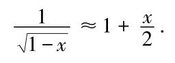
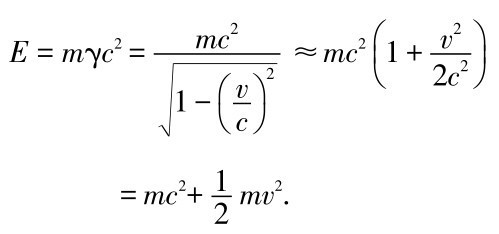
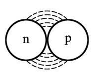
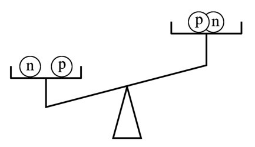
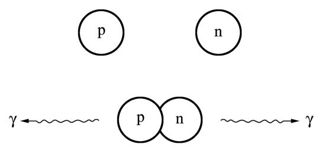

第十五章
第十五章改变世界的方程
第十五章野餐之后我们沿着侏罗山峰散步了一会儿。牛顿一言不发地走着，而我向爱因斯坦称赞着侏罗山脉的优点。在西欧没几个地方能够呈现侏罗森林的幽静与原始本色。当我在CERN被工作中的难题困住时，我常常来到这里寻求灵感。此刻我们坐在一小片树林旁边，艾萨克爵士立即让我们面对一个想必他思考了一段时间的问题。
牛顿： 质量与能量之间的关联在我的脑子里面乱哄哄地跑来跑去。目前我的一连串想法是这样的：一个快速运动的物体，这里指一个几乎以光速运动的物体，比如CERN加速器中的质子，其能量很可能正比于运动质量M 。如果我把它的质量加倍，它的能量也将加倍。如今我们知道运动质量M 随着我们逐渐趋近光速而稳步增大，这意味着物体的能量也将不断增加。另一方面，我们要找的方程应该包含速度的平方，就像我以前的公式E=mv 2 /2一样；原因在于物体由于运动而具有的能量，仅仅因为量纲的缘故，就是一个含有质量和速度的平方的量。由于速度基本上是光速c ，我们可以猜测想要得到的质量和能量之间的比率应该以某种方式包含乘积Mc 2 ，其中M 代表运动质量，即依赖于物体速度的质量。
我一直没有认真考虑过能量也许可以简单地取乘积，也就是E=Mc 2 ；或者该式乘上某一倍数或分数，比如E=Mc 2 /2。至于考虑到物理量纲，这是行得通的：表达式Mc 2 包含了质量以及速度的平方——只是我们正在谈及光速而已。无论如何，我不能把Mc 2 从脑海中去掉。不过，由于我这里使用的M 是一个快速运动的粒子的质量，我可以借助于γ因子把方程重新表达成：
E=m γc 2 .
因子m 现在是静止质量。我猜测这就是描述像CERN加速器中的质子那样高速运动的粒子的正确公式，其中含有一个与静止质量相比很大的运动质量。
这个公式对于低速情况并不有效，因为我们知道我的力学——请原谅我称之为牛顿力学——适用于那种情形；而且根据该力学，一个物体的动能简单地等于E=Mc 2 /2。正如人们所期待的那样，这一能量在速度为零时是不存在的。依照我的力学，一个处于静止状态的物体没有能量。
上述方程是一个十分奇特的方程。让我们暂时在速度趋于零的极限下认真考虑它。我将不会得到零能量。γ因子在v =0时严格为1，而这使我得到很不寻常的方程E=mc 2 。
我必须假设这是个荒谬的方程。它意味着即便在一个静止的物体内部也存在能量，而且这一能量用通常的标准来衡量大得令人难以置信，其原因只不过是光速c 太大了。
哈勒尔： 在我们继续讨论这个你所谓的荒谬的方程以前，我提醒你注意一个微小的数学奇特性。我们考虑你先前提到的公式E=Mc 2 ，假设它对所有速度都成立。
牛顿： 那不就……？
哈勒尔： 等一下！让我把话说完。让我们在v 相对于c 比较小的情况下计算这一关系式。这里一个数学近似帮得上忙。假设x 是个远远小于1的数，那么我们可以写下：

这个数学表达式并不十分严格；它只对足够小的x 值成立，而且即使如此，它也只是近似的而非精确的。取x =0.02作为例子，方程的左边得出数值1.0102，方程的右边得出1.0100——所以该关系式实际上非常有效。
牛顿： 那当然，不过你要用它做什么？
哈勒尔： 很简单，我用这个关系式重新表达我们的能量方程。我把x 替换成（v/c ）2 ，这给出

看了一眼我写出的方程式之后，我的对话伙伴指着算稿激动地跳了起来。
牛顿： 爱因斯坦，我的能量公式它就在那儿：mv 2 /2。等等，让我再检查一遍计算结果。毫无疑问，它是对的。而且现在出现了mc 2 项。先生们，你们知道那意味着什么吗？如果最初的方程式E=Mc 2 不仅对很大的速度近似成立，正如我几分钟之前提出的那样，而且对所有速度都是正确的，那么一个缓慢运动的物体所具有的能量包含两部分——我以前的动能项，由众所周知的mv 2 /2给出，加上第二个神秘的E=mc 2 项。倘若那是对的，则意味着我的动能mv 2 /2仅仅代表一个微小修正；至此，一个物体的能量的更主要部分存在于它的静止质量之中，由mc 2 给出，相比之下这是个巨大的量。
爱因斯坦： 牛顿，那对我来说不是什么新闻。事实上，一个物体的总能量由公式E=Mc 2 给出。1905年我在我那篇关于相对论的论文中推导出了这个方程。一个有质量且以低于光速c 的速度在空间运动的物体，其能量包含你刚刚提到的那两部分。当速度为零时，物体的能量当然不为零；就你的力学理论而言，那就会得出零能量。取而代之，能量由E=mc 2 给出，即物体的静止质量和光速的平方之乘积。
牛顿： 然而，那是巨额的能量啊！你其实是在说，有些处于静止状态的物体，比如我正拿着的这块小鹅卵石，蕴藏着巨大的能量？
爱因斯坦： 艾萨克爵士，那正是我要说的。按照我的假说，质量和能量之间没有本质的差别。即使我正确理解了哈勒尔先前的评论，我们仍然不知道为什么有些粒子具有质量而其他粒子不具有质量。然而，依我看，一个粒子的质量只不过是“冻结能量”（frozen energy）。
牛顿走来走去，陷入沉思之中。尔后他激动万分，问了另外一个问题。
牛顿： 当使用冻结能量一词时，你是在暗示巨额的能量，比方说冻结在我拿着的这块小鹅卵石中的能量，最终会仅仅通过熔化就释放出来吗？你不相信这一点，对吗？
爱因斯坦： 那的确可能发生。
牛顿： 你不是开玩笑吧？
牛顿突然看起来面色苍白而憔悴，仿佛几夜没有睡觉。
爱因斯坦： 如果你不相信我的话，就去问哈勒尔。
牛顿 （显得将信将疑）：我希望你们两个都清楚：倘若这个方程是正确的，它对于我们理解自然界将导致令人惊异的后果；它对于我们的星球也将导致灾难性的后果。谁能保证在我们这个世界上所有的物质都是稳定的？谁能保证它不会消解成其他形式的能量？它也许会突然通过大爆炸转化成光能。
牛顿几步登上山岗，在那里日内瓦湖和远处的阿尔卑斯山美景可以尽收眼底。爱因斯坦和我仍旧躺在草地上。
爱因斯坦： 如今科学界是怎样看待我的质能方程的？即使方程给每个带质量的粒子或物体分配了大量的能量，但依然不清楚那些能量是否会全部或部分地释放出来。我很想对此有更多的认识。不过牛顿回来了，我想我们只能以后再来关注这一点了。
牛顿： 你们知道我刚才一直在想什么吗？考虑一下太阳吧，我们都知道它日复一日地辐射出大量的能量，其中主要是电磁辐射能。这种辐射几百万年来一直在持续着，也许甚至已经持续几十亿年了。
哈勒尔： 太阳已经存在了40亿（4×109 ）年以上。
牛顿： 那就更好了。无论如何，它在漫长的岁月里一直发光发热。甚至我在剑桥写书的时候，就对太阳能来自何处感到迷惑不解。如果质量确实代表一种“冻结能量”，问题就容易解决了。我们可以简单地假设在太阳内部发生的某种过程是利用了大量的“冻结质量能”。当然了，我们得确定这些过程。而且如果它们存在的话，我们还得研究的问题是能否使这些过程也在地球上发生。那将是怎样的前景啊！在这种情况下，我们会得到取之不尽的能源。
爱因斯坦： 多得把整个行星炸上天都用不完——更确切地说，炸入星际空间。
牛顿： 取常用单位瓦特秒（Ws）和千瓦时（kWh），让我们估算一下你的公式预言1千克（kg）的质量相当于多少能量。如果这1千克质量以1米每秒（m/s）的速度运动，那么根据我的力学理论它具有动能mv 2 /2，等于0.5kg（m/s）2 ，即等于0.5Ws。要依照爱因斯坦的方程计算能量项，我只得把v 换成c 再乘以2：
1kg×c
2
=1kg×（3×108
m/s）2
=9×1016
Ws
=25×109
kWh
［1kWh=3600s×1000W=3.6×106 Ws］.
这等于大约300亿千瓦时，实在是无法想象的能量数额。
哈勒尔： 那相当于一个年输出功率为3兆千瓦的大型发电站所产生的能量数额。瑞士这样大小的国家可以依靠它存活了。
然而，我认为我们对质能方程所做的哲学探讨没有任何意义。即便爱因斯坦的方程预言每一质量单元都配得了相当大的能量当量，那并不意味着我们可以把全部质量释放为能量。自1945年第二次世界大战结束以来，已经发生了很多同从质量到能量的转化有关的事情，因此可以追溯到爱因斯坦的方程。我认为如果我们系统地仔细检查各种可能性，那将最好不过了。
爱因斯坦： 哈勒尔，我们立即开始吧。但是你知道，你得在这种讨论中带个头。你明白吧，牛顿和我……
哈勒尔： 我带来了一篇你1905年的文章的副本。
爱因斯坦： 你是说我在《物理学年刊》上的第二篇文章，那篇关于相对论的3页纸的文章？
哈勒尔： 没错，就是它。这是篇短文，但是考虑到它不但对物理学而且对我们全盘理解大自然和世界的现状所产生的后果，它有充分的理由成为20世纪最重要的科学论文。我建议你给我们读出最后那段决定性的结论。
爱因斯坦 （朗读）：“如果一个物体以辐射的形式放出能量L ，它的质量将减少L/V 2 ［这里V 是光速（我们现在总是用c 表示）］。在这个过程中，从物体中取走的能量并非要直接转化为辐射能不可；这导致我们得到一个更一般的推论：一个物体的质量是其能量容量的量度。倘若能量数额变化了L ，质量会同样地改变（L /9）×10-20 ，如果我们以单位尔格（erg）度量能量并以单位克度量质量的话。该理论可以用能量容量非常不稳定的材料来检验——举个例子，比如说镭盐；这一点并没有被排除。” 6
哈勒尔： 顺便说一下，艾萨克爵士，现在很少再用尔格做能量的单位了：1Ws=107 ergs。眼下还是回到我们的实验。正如我们可以看到的那样，爱因斯坦甚至在他第一篇关于质能关系的论文里面就预言有可能通过例如对镭元素辐射能的仔细研究来检验理论。而且他提到了一个实例，在这个例子里能量公式的重要性立刻变得一目了然。爱因斯坦教授，我希望你会允许我在这里介绍那个实例，尽管我的介绍是以某种改进了的形式。当一个物体以电磁波的方式辐射能量时，它总是损失质量。一个炽热的钢球会以热辐射的方式辐射电磁能。假设球体在冷却到室温以前辐射掉了能量E ；依照爱因斯坦的公式，这份能量等价于质量E/c 2 。现在，如果我以极高的精度在这个球体冷却前后称量它，我将发现它在这个过程中重量损失了E/c 2 。不幸的是，光速如此之大，使得质量差别变得极其微小，难以直接测量。
让我举另外一个例子：一个100瓦的电灯泡发1小时的光放射的能量相当于10-12 千克的质量。这又是个无法直接探测的微小质量。
尽管如此，仍然存在一些质量差可以立即被察觉到的过程，但是所有这些过程都与原子物理学、核物理学和粒子物理学有关联。我愿意更详细地提及其中一个过程。我们为什么不着眼于重氢的原子核呢？

图15.1 一个重氢原子的原子核叫做氘核；它含有一个质子p和一个中子n，由核力束缚在一起。要想把它们相互分开，至少得使用2.2MeV的能量，这一能量对应于氘核的质量与它的两个组分粒子的质量之和的差值。
牛顿： 我知道普通的氢是什么，但什么是重氢？
哈勒尔： 氢有一种少见的形式，其原子核并不像普通氢那样只含有一个质子，而是一个束缚系统——包含一个质子和一个中子。你也许记得，中子是电中性的粒子，在许多方面它表现得如同质子。一个质子和一个中子可以结合在一起形成一个新的实体，我们称之为氘核。氘核的电荷当然等于质子的电荷，这使得取一个普通的氢原子并把它的原子核即质子与氘核互换成为可能。这个新原子比普通的氢有更大的质量，原因是氘核比质子重。重氢的科学名称是氘。在地球上自然存在的（例如在海水中化学合成的）氢中有很小的一部分（大约0.016％）实际上是重氢。鉴于海洋的大小，即便那么小的比例也会造成天然氘的总量很大。
爱因斯坦： 可是为什么一个质子和一个中子结合起来就形成一个氘核呢？是由于新的力使然？
哈勒尔： 当然了。质子和中子之间存在很强的力，我们称之为核力。当使一个质子和一个中子相互挨得很近时，它们相互强烈地吸引：于是它们组合成一个氘核。
爱因斯坦： 我想我能够猜测出你的用意所在。你可以告诉我们有关质子、中子和氘核各自的质量的更准确信息吗？

图15.2 氘核的质量比质子和中子质量之和大约小了0.12％，这一差额称做质量亏损。
哈勒尔 （从口袋里掏出一本小册子）：这本小册子定期出版并经常更新。它包含基本粒子的很多信息，包括它们的质量。顺便说一下，在粒子物理学中我们不用克或毫克度量粒子的质量；那将导致非常小的数字。取而代之的是，我们采用爱因斯坦的能量公式并以能量单位确定质量，最常见的是我们先前讨论过的电子伏单位。
牛顿： 多么有趣的窍门！你能告诉我质子——确切地说处于静止状态的质子——的质量以电子伏作单位是多少吗？
哈勒尔： 这儿有一个表格是用电子伏表示质量，更确切地说是用百万电子伏（MeV——1MeV等于100万eV，或者106 eV）以及千克来表示。
| 质子质量 | 938.3MeV=1.673×10-27 kg |
| 中子质量 | 939.6MeV=1.674×10-27 kg |
| 氘核质量 | 1875.7MeV=3.343×10-27 kg |
请允许我把自己身体的质量用MeV来表达：
哈勒尔的质量=4.49×1031 MeV=80kg。
爱因斯坦 （已经把两个数字加起来了）：我是这样认为的。牛顿，看这儿，由于氘核含有一个质子和一个中子，我们可以预期它的质量等于质子和中子质量之和。不过当你把这两个质量加起来时，你得到1877.9MeV，比一个氘核的质量大2.2MeV或0.004×10-27 kg。
牛顿： 但是那怎么可能呢？哈勒尔，你不是告诉我们说一个质子和一个中子可以结合成一个氘核吗？为什么一个氘核的质量不等于那两个粒子的质量之和呢？
哈勒尔： 如果你在实验条件下真使一个质子和一个中子缓慢地凑到一起，比方说在一个核物理实验室里，你得到的就不只是一个氘核了；在此过程中，能量以光子即电磁辐射的方式辐射出来。这一能量刚好等于失踪的质量。由于氘核的两个组分的质量之和比它本身的质量稍大，我们得到所谓的质量亏损（mass defect）。这也可以称做质量赤字（mass deficit）。因而眼下我们有了一个正好对应爱因斯坦在他的3页纸论文中所描述的过程：一个系统以电磁辐射的方式释放出能量，在此过程中它损失了质量。

图15.3 当一个质子和一个中子结合时，生成了一个系统，该系统以光子的形式放射能量。典型的情况是在相反的方向发射出两个1.1MeV的光子。它们的能量之和等于图15.2所描述的质量亏损。
爱因斯坦： 当一个氘核形成时，2.2MeV的能量就释放出来了，大约占氘核质量的0.1％。这意味着大约千分之一的原始质量转化为能量。
哈勒尔： 反过来，为了把氘核分裂成它的质子和中子组分，2.2MeV的能量必须加到氘核上。该过程可以很容易地在实验室里实现，就像我说的那样，它只是消耗能量而已。
牛顿： 尽管我按照千瓦时来想象能量没有任何问题，但是我对相当于2.2MeV的能量数额真的一点感觉都没有。
哈勒尔： 事实上，我们也可以把氘核的束缚能用千瓦时来表达。不过我恐怕那也无助于我们对它的想象，原因是数值会变得特别小。我的袖珍计算器告诉我该能量几乎等于10-19 千瓦时。
牛顿： 假设我拥有大量质子、中子和电子。我使一个质子和一个中子结合成一个氘核。我把一个电子加到氘核上，这样我就构建了一个重氢原子。现在我如果继续配制数量可观的重氢，比方说1千克，那会释放出多少能量？
爱因斯坦： 那容易计算。正如我们刚才谈论的那样，当我们构造一个氘核时，它的质量的大约千分之一转化为能量。从1千克重氢（或氘）开始，我们将其千分之一，即1克，转变成能量。依照我的公式E=mc 2 以及我们以前做过的计算，1克质量约等于2500万千瓦时的能量。如此巨额的能量将主要以电磁辐射的形式释放出来，倘若我们要从中子和普通氢合成1千克重氢的话。
现在假设我们很快地完成这一过程。那我们不就得到一颗具有无法想象的毁灭力的炸弹了吗？哈勒尔，那样的后果不会使你胆战心惊吗？
哈勒尔： 我们不得不讨论那种可能性。说到这儿我要指出，并没有只包含中子的天然存在的物质，所以我们无法用那种过程生产出数量可观的氘。因而这既不是产生能量的途径，也不是制造炸弹的办法。
不过，看看，我们已经呆在这儿好一会儿了。你们想再呆一会儿，还是我们动身返回？
我们没有人想要返回日内瓦，于是我们决定在侏罗山上过夜。由于天气慢慢变凉了，牛顿和爱因斯坦走进树林搜集一些干木头，而我整理了一块地方生火。不久以后，我们举行了一个惬意的营火会。牛顿和爱因斯坦找来足够的木头，篝火噼噼啪啪地烧了整整一夜。